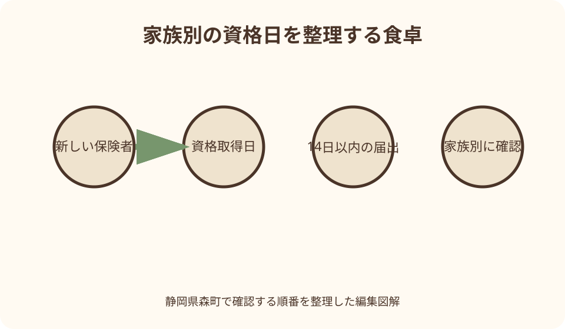
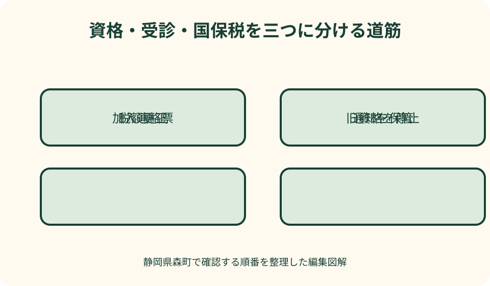

健康・医療・保険｜最終確認 2026-08-10
静岡県森町で国民健康保険をやめる手続き｜就職・扶養入り後の届出
勤務先から新しい資格情報が届いても、森町国民健康保険の脱退が自動で完了するとは限りません。森町公式は、他の健康保険へ加入したときは14日以内の届出が必要で、マイナ保険証を利用している人も手続きが必要と案内しています。資格取得日、世帯の加入者、受診歴、保険税を一緒に確認します。

編集イラスト結論：新しい保険へ入った日を起点に14日以内に届ける
就職して勤務先の健康保険へ加入した人、または家族の被扶養者になった人は、森町国民健康保険からの脱退届が必要です。会社が社会保険の加入手続きをしても、森町国保の資格喪失届まで必ず代行するわけではありません。
森町公式は、国保の異動があったときは14日以内に届けるよう案内しています。必要な基準日は、入社日や勤務開始日ではなく、新しい健康保険の資格取得日です。内定日、初出勤日、資格取得日が違う場合は、新しい保険者の書類で確認します。
マイナンバーカードを保険証として使っている人も、森町への脱退手続きが必要です。カードが同じだから保険者情報も自動的に手続きされると思わず、新しい資格情報の反映と町への届出を分けて考えます。
この記事の確認日は2026年8月10日です。書類の名称、添付省略、代理届出、郵送可否などは変わる可能性があります。森町住民生活課国保年金係へ、新しい保険の資格取得日と対象者全員の氏名を伝え、最新の提出方法を確かめてください。
国保をやめる四つの主な場面を分ける
森町公式の脱退届には、他市町村への転出、他の健康保険への加入、死亡、生活保護の開始が挙げられています。同じ「国保をやめる」でも、住民異動、死亡届、福祉の手続きと連動するため、必要書類と担当が異なります。
就職と扶養入りは、新しい保険資格を得る点では共通します。しかし、本人が被保険者になるのか、家族の被扶養者になるのかで資格情報の発行元が違います。扶養の認定日を勤務先へ確認し、申請中を加入済みとみなしません。
転出では、森町の転出届と国保資格の扱いを同時に確認します。森町公式の転出届ページは、国保の資格確認書などを持参物として挙げています。新住所地では転入と新たな保険の手続きが必要になるため、空白期間を作らないようにします。
死亡や生活保護開始では、遺族や福祉担当が関係します。世帯主が亡くなった場合、残る世帯員の国保資格や納税義務者の表示が変わることがあります。一人分の脱退だけで世帯全体が終わったと考えず、国保年金係へ家族構成を伝えます。
就職日と健康保険の資格取得日は同じとは限らない
脱退準備の一枚目には、雇用開始日、新しい健康保険の資格取得日、森町国保で最後に受診した日を書きます。資格喪失日は町が法令と資格情報に基づき確認するため、自分で「月末まで国保」と決めません。
試用期間中は社会保険に入らないと勤務先から説明された、加入手続きが遅れている、資格取得日が遡ったなどの事情があれば、会社の担当者と保険者へ書面で確認します。給与から保険料が引かれた月だけで資格日を推測しません。
新しい資格確認書や資格情報のお知らせがまだ届かなくても、資格取得証明や加入連絡票を勤務先が発行できる場合があります。森町が受け付ける資料名、原本・写し、情報連携で省略できる条件を国保年金係へ尋ねます。
新しい保険の資格取得日より前に森町国保を先に外すと、医療保険の空白が生じるおそれがあります。逆に取得日後も森町国保を使うと、資格喪失後受診となり給付費の返還が必要になる場合があります。日付を一日単位で照合します。
扶養入りは申請日ではなく認定結果を確認する
配偶者や親の勤務先へ扶養申請を出しただけでは、認定済みとは限りません。収入、同居・仕送りなどの条件を保険者が審査し、被扶養者の認定日を決めます。森町国保の脱退は、その認定を示す資料が整ってから進めます。
扶養認定が希望日より後になった場合、その間は森町国保の資格が続く可能性があります。申請中だから医療機関へどちらの資格を示すか迷うときは、新しい保険者と森町の双方へ現在の処理状況を伝えます。
夫婦と子どもが同時に扶養へ入る場合も、認定日は全員同じとは限りません。対象者ごとに氏名、生年月日、新しい資格取得日を書き、森町国保を残す家族と脱退する家族を分けます。
扶養から外れる手続きは逆方向で、森町国保への加入が必要になる場合があります。家族の勤務先から資格喪失の連絡を受けたら、脱退時の資料だけを保管せず、次に国保へ戻る際の証明書も取得できるよう連絡先を残します。
森町へ提出する資料を対象者別にそろえる
森町公式は、他の健康保険へ入った場合の添付として、加入連絡票または他の保険の資格確認書等を挙げています。マイナンバーによる情報連携が可能なら省略できることがありますが、反映には時間差もあるため事前に確認します。
資格確認に使える資料には、新しい保険者名、対象者、資格取得日が読めることが重要です。家族分が一枚に載っていない場合は全員分を用意します。マイナポータルの画面を使えるか、印刷や提示方法を町へ尋ねます。
森町国保から交付された資格確認書、資格情報のお知らせ、旧保険証など手元の物について、返却または処分方法を確認します。個人情報があるため、可燃ごみへそのまま出したり、家族の別人へ使わせたりしません。
届出人の本人確認書類、世帯主との関係、委任状の要否も確認します。本人が勤務で来庁できない場合、同一世帯員による届出、郵送、別の方法が可能かを国保年金係へ事前に尋ねます。

マイナ保険証でも脱退届を省略しない
マイナ保険証は、医療機関で最新の資格情報を確認する仕組みですが、森町公式は利用登録済みでも異動届が必要と明記しています。カード一枚を使い続けることと、保険者への加入・脱退届は別です。
新しい健康保険の資格がマイナポータルへ表示されるまで時間がかかる場合があります。反映前に受診する必要があるときは、新しい保険者が案内する資格確認方法を医療機関へ示します。森町国保の古い資格を代わりに使いません。
脱退届を提出した後も、医療機関の画面に森町国保が残っているように見える場合は、受付で資格取得日を伝え、新しい保険者へ確認します。表示だけを根拠に受診先へ旧資格で請求してもらわないようにします。
カードを持たない人には、新しい保険者から資格確認書が交付される仕組みがあります。交付前の受診方法を保険者へ聞き、森町国保の資格確認書を有効期限だけ見て使い続けないようにします。
資格喪失後に森町国保で受診したら、すぐ連絡する
新しい保険の資格取得日以後に、誤って森町国保の資格確認書等で受診した場合、森町が医療機関へ支払った保険給付分の返還を求められることがあります。窓口で払った自己負担分だけの問題ではありません。
森町の特定健診ページも、受診日時点で国保資格を喪失している人は受診できず、誤って受診した場合は森町国保が負担した全額を返還してもらう場合があると案内しています。健診券も資格喪失後は使わないでください。
誤使用に気付いたら、医療機関と森町国保年金係、新しい保険者へ受診日と状況を伝えます。医療機関で請求先を訂正できる時期なら、返還手続を避けられる場合があります。自分でどこへ払うか決めず、指示を受けます。
森町へ返還した後、新しい保険へ療養費を請求できる場合があります。また、保険者間で調整できる場合もあります。必要な領収書、診療報酬明細に関する資料、申出書を確認し、同じ費用を二重に請求しません。
国保税は脱退届の直後にその場でゼロとは限らない
森町の国民健康保険税は、一年分を複数の納期へ分けて納めます。そのため、10月納期限の納付書が10月加入分そのものとは限りません。社会保険へ加入した月以後も納付書が残っているだけで二重払いと断定しないでください。
森町公式は、国保脱退後、加入月数に応じて税額を精算すると説明しています。資格異動の届出があった月の翌月に税額更正を行うことが基本で、一部例外もあります。更正通知が届くまでは納付書を捨てません。
納期限が更正前に来る場合、自己判断で支払いを止めると未納扱いになる可能性があります。現在の納付書を払うべきか、口座振替や年金天引きがどうなるかを税務課町民税係へ確認します。過納があれば還付となる場合があります。
世帯の一部だけが脱退する場合、残る国保加入者の所得や世帯構成により税額を再計算します。本人一人の保険料相当額を単純に差し引く仕組みとは限りません。世帯主へ届く更正明細で対象人数と期間を確認します。
世帯の一部だけ脱退するときは家族一覧を作る
父だけ就職、子どもだけ扶養認定、配偶者は国保継続というように、世帯内で資格が分かれることがあります。世帯主が国保加入者でなくても納税通知が世帯主宛てになる場合があるため、通知の宛名だけで加入者を判断しません。
家族一覧には、氏名、森町国保の資格、新しい保険者、資格取得日、脱退届の提出日を書きます。子どもの医療費受給者証など、健康保険情報を登録している別制度の変更届も確認します。
家族の勤務先へ出した扶養申請と、森町へ出す脱退届は別の書類です。会社担当者が「手続き済み」と言った場合、どの保険の何を済ませたのかを具体的に聞きます。
同じ世帯で国保を続ける人には、新しい資格確認書や番号変更の案内が届く場合があります。脱退する人の書類だけを返却し、残る人が受診に必要な資格情報を誤って処分しないよう封筒を分けます。
転出では住民票と医療保険の空白を同時に防ぐ
森町から他市区町村へ転出する場合は、森町の転出届を提出します。森町公式では引っ越し予定日の14日前から受け付け、国保の資格確認書等を持参物として示しています。オンライン転出を使う場合も、国保の扱いを確認します。
転出後は新住所地で転入届を行い、勤務先保険などに入っていなければ新住所地の国保加入が必要になる場合があります。森町国保が転出後もそのまま使えると思わず、転出日と転入日を記録します。
すでに町外へ移って転出届を出していない場合、森町公式は郵送による転出届を案内しています。本人確認書類や返信用封筒などが必要なため、国保脱退と合わせて住民係へ確認します。
修学や施設入所で町外に住む場合は、単純な転出脱退と異なる特例が関係することがあります。森町公式の国保ページにも修学や一部施設入所の届出が示されているため、住所を移す前に国保年金係へ事情を伝えます。
届出が遅れた場合は日付と受診を隠さず整理する
14日を過ぎたから届出できないわけではありません。気付いた時点で、新しい保険の資格取得日、森町国保で受診した日、納付済みの国保税を整理し、国保年金係へ連絡します。
遡って資格を喪失すると、国保税の更正や還付だけでなく、資格喪失後に森町国保が支払った医療費の返還が生じる場合があります。得になる部分だけを処理することはできないため、受診歴を正確に伝えます。
勤務先の証明が遅れている場合は、いつ依頼したか、資格取得日がいつになる予定かを書きます。情報連携が反映されるまで待つよう町から案内された場合も、確認日と次回連絡日を残します。
過年度へ遡る税額更正では、通知の年度と増減額を確認します。還付金がある一方で別年度の納付が残ることもあります。不明な納付書を捨てず、税務課へ通知番号を伝えて照会します。
良い点：資格と税を正しい日付へ戻せる
国保脱退届の良い点は、新しい健康保険の資格取得日に合わせて森町国保の資格を整理できることです。医療機関が正しい保険者へ請求し、将来の返還手続を避ける土台になります。
家族全員の資格日を一覧にすると、扶養認定漏れや一部だけの届出漏れを見つけられます。子どもの医療費助成など関連制度へ保険変更を届ける必要も把握できます。
国保税は資格期間に応じて更正されるため、届出により加入実態へ合わせた精算へ進めます。納期と加入月が一致しないことを理解すれば、通知が届いた時点で落ち着いて内訳を確認できます。
マイナ保険証を使う人も届出記録を残すことで、資格情報の表示が切り替わらないときに、どの保険者へいつ連絡したかを説明できます。カード一枚に依存せず、資格日を紙でも残せます。
注文したい点：現行書類に合わせた持ち物一覧を更新してほしい
森町の国保ページは、資格確認書等と情報連携を含む現行の案内があり、脱退理由を確認できます。一方、国保税のFAQには旧保険証と印鑑という記載が残り、読む時期によって持ち物が違って見えます。
資格確認書、資格情報のお知らせ、マイナポータル、加入連絡票のうち、どれを原本・写し・画面提示で受け付けるかを、一つの最新一覧へまとめてほしいところです。代理、郵送、オンラインの可否も同じページにあると助かります。
脱退届の提出から資格喪失処理、国保税の更正、還付または追加納付、関連受給者証変更までの時間軸も見えると、届出後に納付書が届いて不安になる人を減らせます。
資格喪失後受診が起きた場合の連絡先と処理の流れも、国保ページから見つけやすくしてほしい情報です。返還通知が来るまで待つのではなく、誤使用に気付いた時点で相談できる案内が役立ちます。

代案・結論：新しい資格資料が届かないときは証明を依頼する
新しい資格確認書等が届かない場合は、勤務先や新しい保険者へ資格取得証明、加入連絡票、資格情報の発行可否を尋ねます。森町が受理できる資料を国保年金係へ確認し、両者の名称を合わせます。
会社の加入処理が未確定なら、森町国保を先に脱退できるとは限りません。受診予定があることを勤務先と町へ伝え、現在使うべき資格を確認します。治療を先延ばしにせず、医療機関にも手続き中であることを相談します。
来庁が難しい場合は、同一世帯員の届出、委任、郵送などの可否を尋ねます。本人確認資料や個人番号を送る場合は、町が指定する方法を使い、電子メールへ不用意に添付しません。
結論は、新しい資格取得日を確認し、対象者全員分を14日以内に届け、旧資格を使わず、税の更正通知を確認することです。書類が一枚足りなくても放置せず、不足名と取得予定日を町へ伝えます。
家族に残す資格記録は、保険者ごとに一行にする
資格台帳には、氏名、保険者名、資格取得日、資格喪失日、届出日、確認資料を一行で記録します。加入期間を重ねて書かず、日付が未確定なら「確認中」と表示します。
医療機関へ提示した資格と受診日も、切替前後の一か月だけ記録します。誤使用が見つかったとき、対象受診を早く特定できます。診療内容そのものは資格台帳へ書かず、医療ファイルへ分けます。
国保税の通知は、当初通知、更正通知、還付通知、納付書を年度別に保管します。口座振替や年金天引きの記録も付け、どの年度の精算かを家族が確認できるようにします。
不要になった資格確認書等は、森町または新しい保険者の指示に従って返却・処分します。写真を撮って残す場合も、資格番号を家族の共有アルバムへ置かず、閲覧者を限定します。
大石の視点：就職後の家計と実家の維持費を同じ月だけで判断しない
大石の視点では、就職や扶養入りの月は、給与の社会保険料、国保税の納付書、後日の更正が重なって見えます。その一か月の支出だけで実家の売却を急がず、資格期間と精算予定を分けて確定します。
転職や転居で森町の実家を離れる場合、国保脱退と不動産の管理は別です。鍵、郵便、草木、雨漏り、固定資産税、火災保険の担当を決め、健康保険の個人情報を管理者へ渡さないようにします。
土地の道路、境界、農地、登記名義は、社会保険へ加入しても自動で変わりません。就職直後に一度で整理しようとせず、住民異動、医療保険、家の維持、将来の処分を四つの予定に分けます。
売却未定なら実家カルテに名義、維持費、連絡先、管理日を残せます。資格台帳は別に保護します。新しい仕事と生活が落ち着いてから、住み続ける、家族管理、賃貸、売却を比較できる状態を作ります。
まとめ：脱退手続の最終チェック
最初に、新しい健康保険の保険者名、対象者、資格取得日を確認します。就職日や扶養申請日だけで国保資格の終了日を決めません。世帯の一部だけが移る場合は全員を一覧にします。
次に、加入連絡票、資格確認書等、森町が受け付ける資料をそろえます。マイナ保険証の登録済みでも届出は必要です。14日以内を目安に国保年金係へ提出し、旧資格の返却・処分方法を確認します。
資格取得日以後は森町国保で受診しません。誤って使った場合は、医療機関、森町、新しい保険者へすぐ連絡します。健診券や医療費助成受給者証など関連する資格も変更を確認します。
最後に、国保税の更正通知を待ち、納付・還付・口座振替を税務課へ確認します。届出をしただけで当日の納付書が無効になるとは限りません。資格と税の両方が正しい期間へ直ったことを確認して、脱退手続は完了です。
公式情報・確認先
掲載内容は次の一次情報を基礎に整理しました。営業、料金、催し、交通は変わるため、出発前または手続き前にリンク先で最新情報を確認してください。
- 国民健康保険（静岡県森町、2026-08-10確認）
- 就職・退職（静岡県森町、2026-08-10確認）
- 国民健康保険税のよくある質問（静岡県森町、2026-08-10確認）
- 転出届（静岡県森町、2026-08-10確認）
- 国民健康保険特定健診について（静岡県森町、2026-08-10確認）
- マイナンバーカードの健康保険証利用について（静岡県森町、2026-08-10確認）
- 国民健康保険の加入・脱退について（厚生労働省、2026-08-10確認）
- 国民健康保険法（厚生労働省法令等データベース、2026-08-10確認）